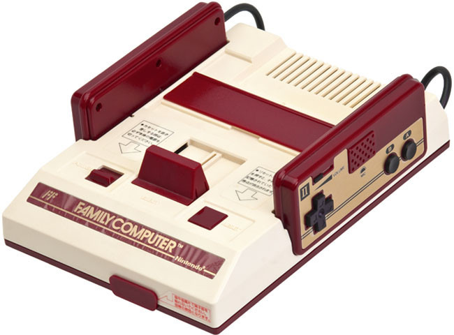
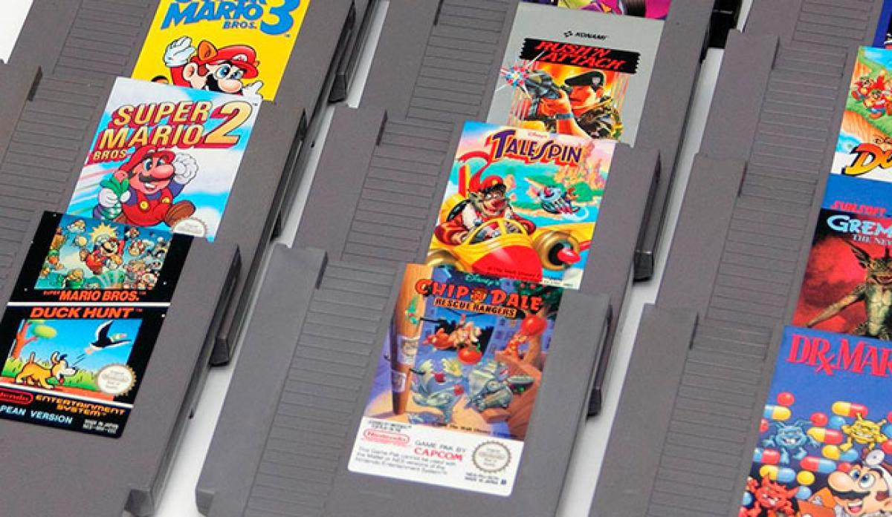

La Historia De La Nes
La NES, consola de 8 bits de Nintendo, ha sido uno de los mayores éxitos de la historia de los videojuegos. Basta decir que se vendieron más de 60 millones de consolas y 500 millones de juegos.

Hay que remontarse al año 1983, cuando Nintendo introduce en el mercado japonés su Famicom (FAMily COMputer). Era la versión japonesa de la NES tal y como la conocemos hoy día. Los cartuchos se introducían por una ranura que se encontraba en su superficie y para extraerlos se usaba un botón de EJECT, como en su hermana mayor Super Nintendo.

El sistema gozó de mucho éxito,
entre otras cosas por sus magníficos juegos.
Top 10 mas vendidos.
Super mario bros(40.240.000 uds. vendidas)
Hablar de Super Mario Bros es hablar de historia viva de los videojuegos, pues hasta hace no tanto era el videojuego más vendido hasta la fecha (sólo superado por Grand Theft Auto V y Wii Sports). Poca gente habrá que no lo haya probado, y de ser así, nunca es tarde para hacerlo, pues conserva como el primer día toda su jugabilidad y frescura. Un imprescindible que debería estar sin duda en la estantería de cualquiera que haga llamarse coleccionista.
Duck hunt (28.310.000 uds. vendidas)
Otro de esos juegos que están en la cabeza de cualquiera que haya nacido en los 80. Duck Hunt, con su inseparable pistola Zapper era el mejor ejemplo de como con una mecánica sencilla pudo conseguir un juego sublime, capaz de atrapar durante horas a miles de jugadores de todo el mundo. Quizá hoy no sorprendería algo similar, estamos acostumbrados a numerosos y diversos periféricos para nuestras consolas, pero en su momento fue toda una revolución poder utilizar una pistola para jugar en nuestras televisiones (a día de hoy, inservible en nuestras televisiones modernas, sólo compatible con televisiones CRT).
Super Mario Bros 3 (17.280.000 uds. vendidas)
Sin duda, una de las obras maestras de Nintendo y de toda la historia de los videojuegos. Un juego sublime tanto a nivel técnico como jugable, que supo exprimir como pocos las capacidades de la NES, y que supuso un antes y un después en muchos jugadores de la época. Considerado junto a Super Mario World uno de los mejores juegos de la franquicia del fontanero por méritos propios.
Super Mario Bros 2 (7.460.000 uds. vendidas)
Uno de los casos que demuestran el tirón que tiene el gran Mario. Super Mario Bros 2 (o Super Mario USA, como se conoce en Japón) es una adaptación del juego Doki Doki Panic al que se le modificaron los sprites de los personajes por personajes de la saga Mario, dando como resultado un juego completamente diferente al resto de juegos de la saga. Con el tiempo, se ha convertido en todo un clásico, dejando en segundo plano a “la auténtica” secuela del primer Super Mario Bros, el que aquí conocimos posteriormente como Super Mario Bros: The lost level
The Legend of Zelda (6.510.000 uds. vendidas)
Estrenamos el Top 5 con el que posiblemente sea uno de los juegos más influyentes de la NES. La primera aparición de Link en la 8 bits de Nintendo tuvo una acogida espectacular, a la altura del gran juego que es. Considerado por muchos de los mejores de la saga, toda una joya que aún a día de hoy sigue dando grandes momentos de satisfacción..
Tetris (5.580.000 uds. vendidas)
Hablar de Tetris es hablar de uno de los juegos más famosos de la historia de los videojuegos. Este juego ha contado con versiones para casi cualquier sistema, y aún con casi 32 años a sus espaldas sigue estando de actualidad, siendo de los juegos más vendidos en dispositivos móviles. Todo esto no es casualidad, estamos hablando de un puzle tan adictivo como jugable, que una vez que pruebas es difícil desengancharte de el.
Dr. Mario (4.850.000 uds. vendidas)
Tras el éxito abrumador de Tetris, sobre todo en su versión para la portátil de Nintendo, los juegos de puzle estaban de moda, y si a eso le añades la popularidad de nuestro querido Mario, el éxito estaba asegurado. Un puzle muy entretenido y recordado con cariño por muchos de los jugadores de la época, y que a día de hoy sigue manteniendo su frescura como el primer día.
Zelda II: The Adventure of Link (4.380.000 uds. vendidas)
Como era de esperar, no podía faltar el bueno de Link en la lista de los juegos más vendidos de NES. Su segunda entrega no es quizá la más querida por los aficionados de la saga, siendo la que más se aleja del planteamiento habitual de los juegos de la franquicia, convertido prácticamente en un juego de plataformas de acción, con un control espectacular y una dificultad ajustada que va creciendo a lo largo del juego.
Teenage Mutant Ninja Turtles (4.170.000 uds. vendidas)
Con apenas 10.000 unidades más que Excitebike nos encontramos este otro clásico, que sorprenderá a algunos al encontrarse entre los más vendidos de NES. Muy entretenido, con variedad de enemigos y escenarios, y una gran calidad técnica para la época en la que fue lanzado.
Excitebike (4.160.000 uds. vendidas)
Uno de los juegos más recordados de la Nintendo NES, ya no sólo por la cantidad de copias vendidas, si no porque además era “un habitual” en los cartuchos y consolas clónicas de la época, en las que muchos lo disfrutamos. Su sencillez, control y sobre todo sus altas cotas de diversión hacen de el un clásico imprescindible.
Si te gusto,puedes compartirlo con tus amigos.